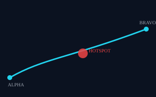
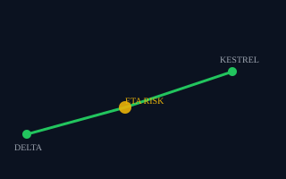

PATTERN
Insight Ready
Accelerating
POLARIS CONCEPT INFERENCE
VALIDATION REQUIRED
RSP-417 status disruption has material dependency exposure, but shared-source alerts and open route gates prevent immediate reroute.
MAP · INTERDICTION CORRIDOR

MAP · ETA RISK

{{ stageTitle }}
{{ stageDesc }}
Locked
Complete these steps to open this stage.
{{ l.text }}
Dependency exposure does not prove causal impact from the tracking disruption.
Dependency chainSelect a node or edge to inspect it
→
→
Potential restoration exposure if delay persists→ DC-LOG-102
SUBSTITUTE INVENTORY
0
Qualified PCM-9 substitutes at Kestrel · INV-PCM9-KESTREL
REQUIRED INSPECTION
UNRESOLVED AT 09:00Z
Movement status
Fresh primary-route status
Alternate-route fuel sufficiency
Route-change authority
RECOMMENDATIONDC-LOG-102POLARIS CONCEPT INFERENCE
VERIFY · PREPARE ALTERNATE · DO NOT EXECUTE REROUTE · DO NOT ATTRIBUTE CAUSE
IMMUTABLE QUALIFIERPrepare the alternate; do not execute reroute; do not attribute cause.
Evidence cutoff09:00Z
OwnerUSR-SUST-01
Approval objectAPP-CL-417
Due / expiryFixture data required
PermittedVerify movement status · Refresh ROUTE-PRIMARY-7 · Prepare ROUTE-ALT-3
ProhibitedExecute reroute · Attribute cause · Task personnel · External communication
CreatesTASK-VERIFY-417
TASK-REFRESH-ROUTE-7
TASK-STAGE-ALT-3
TASK-REFRESH-ROUTE-7
TASK-STAGE-ALT-3
ApprovalHUMAN DEMO DECISION
{{ approveHint }}
APP-CL-417Recorded 09:02Z by USR-SUST-01HUMAN DEMO DECISION
TASK-VERIFY-417Verify movement status · internal
TASK-REFRESH-ROUTE-7Refresh primary route status · internal
TASK-STAGE-ALT-3Prepare alternate · not executed
Synthetic internal tasks only. No network call, external tasking, route command or operational side effect.
OUT-CL-417CLOSED 09:24Z
Human dispositionContinue on primary plan
Corrective actionRemediate DEV-TRK-417 power connector
Remaining gapKnowmadics event lifecycle semantics · VALIDATION REQUIRED
Reopen criteriaFixture data required
The benign resolution is not presented as a prediction success.